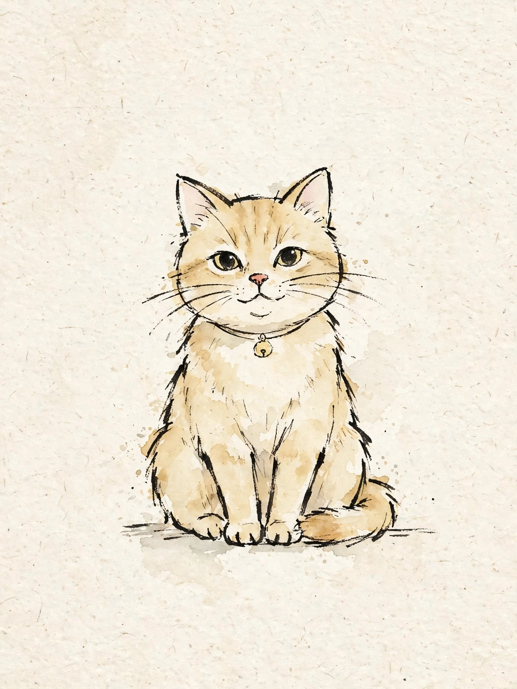
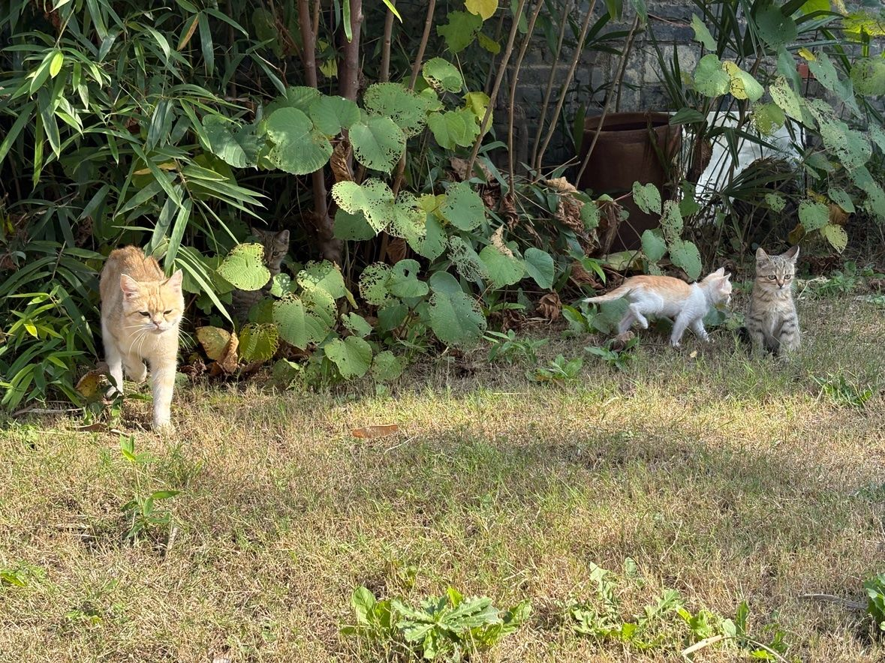
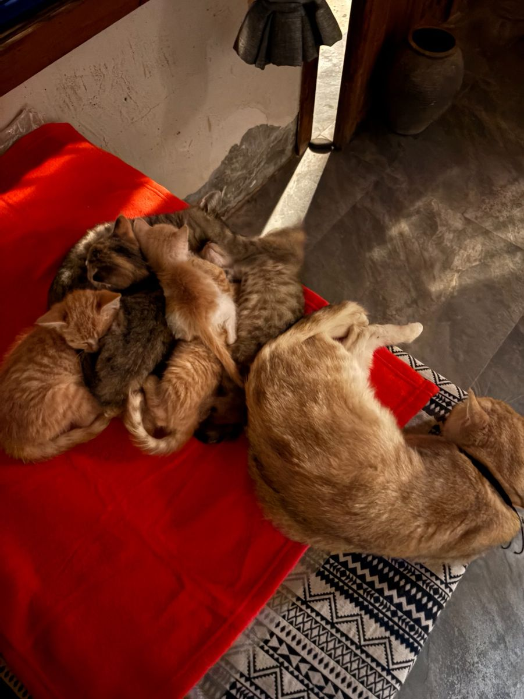
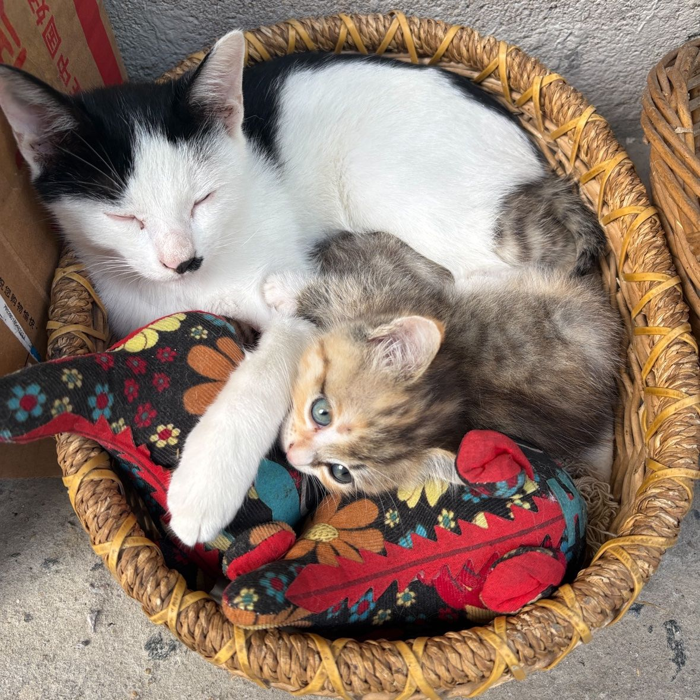
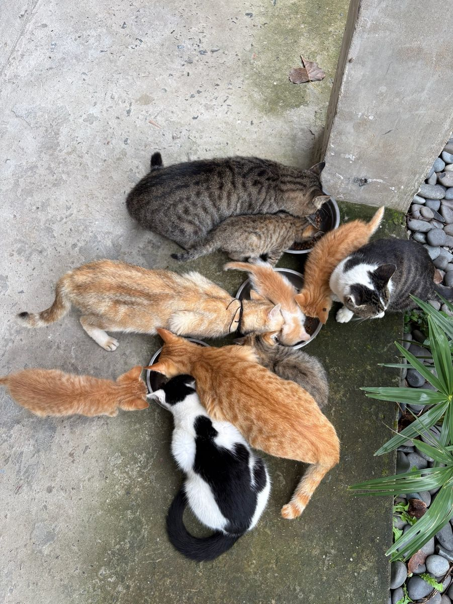
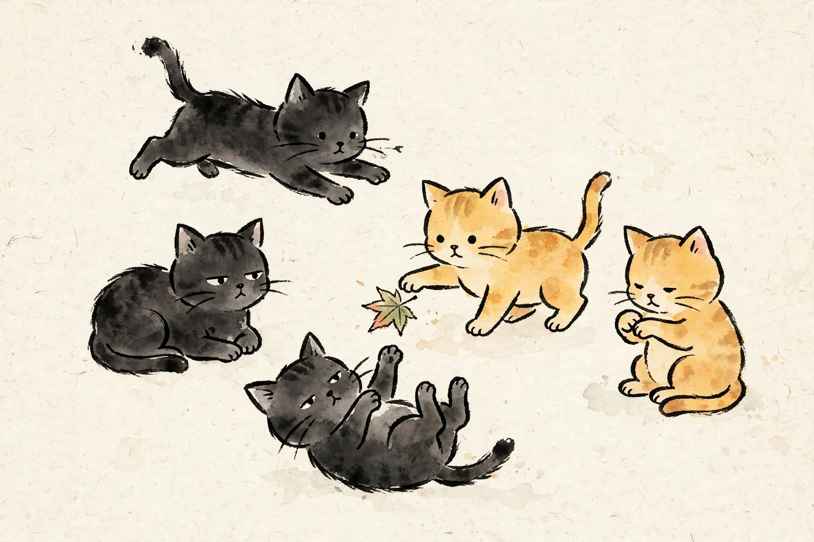

呦唬
母 · 类似金渐层
邂逅的第一只猫。今年 8 月 21 日生下 7 只小猫，五黑二黄，顺利存活、脱离哺乳期。
meow 生活 · Meow名大噪
小院里 14 只猫，每只都有一个花名。
花名就是猫的名字。有的猫是自己来的，有的猫是人带来的。 每只猫背后都有一个人，和一段来小院的经过。





母 · 类似金渐层
邂逅的第一只猫。今年 8 月 21 日生下 7 只小猫，五黑二黄，顺利存活、脱离哺乳期。
公 · 黑色
月月（杨文月）从家里带来素社小院。
艺术共创营期间来的猫
艺术共创营期间陆续来到小院的猫。
艺术共创营期间来的猫
艺术共创营期间陆续来到小院的猫。
文月收养的猫
文月收养的猫。

呦唬的孩子
呦唬的孩子。7 只小猫里 9 月底跑不见两只，剩 3 黑 2 黄，这是其中一只。
呦唬的孩子
呦唬的孩子。
呦唬的孩子
呦唬的孩子。
呦唬的孩子
呦唬的孩子。
呦唬的孩子
呦唬的孩子。
白腹黄背
白腹黄背的猫。
伦峯老师捡的猫
伦峯老师在南塘小住期间捡的猫，后脚双腿瘫痪，只能靠前二脚爬行。
深橘 · 约一个月大
刘姨家猫生崽，母猫没奶水死了几只崽，最后一只带来素社小院养，现会吃会喝会跑。
文君带来的猫
文君（振哥的哥哥）带来的猫，很黏人，白底穿黑披肩。
每只猫背后的故事，等带它来的人慢慢讲。想讲故事的人，去与meow星事喵一回。